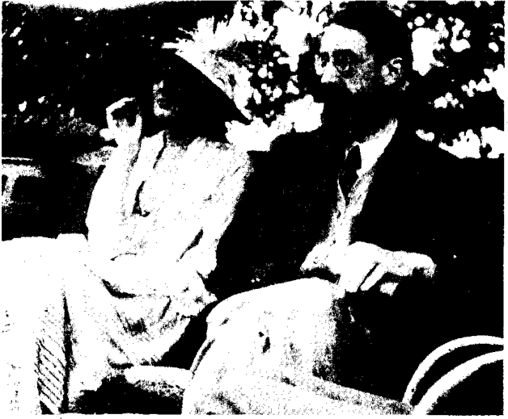

Bölüm 9
The Voyage Out
Virginia Woolf’un kısaca ele alacağımız ilk romanı The Voyage Out’a sadece “The Voyage” yani deniz yolculuğu demeyip, bir de “out” (dışarıya) sözcüğünü eklemesinin bir nedeni vardı. Çünkü bu romanın baş kişisi Rachel Vinrace, yalnız bir deniz yolculuğuna çıkmakla kalmaz; dışarıya, yani dış dünyaya açılır bu yolculuğu sırasında. Virginia Woolf, The Voyage Out üstünde 1908’de çalışmaya başladı. O yıla değin yalnız eleştiri yazıları yayınlamıştı. Beş yıl uğraştıktan sonra, romanı 1913’te bitirdi. Ne var ki, bu arada gene ağır bir ruhsal çöküntü geçirdiği için, The Voyage Out ancak 1915’te yayınlanabildi. Birkaç yıl sonra çağının en ünlü kadın yazarı durumuna gelen Virginia Woolf’un bu ilk romanı yalnız iki bin adet basıldığı halde, ancak on beş yılda tükenebildi.
Virginia Woolf otuz üç yaşındayken çıkan The Voyage Out, geleneksel gerçekçi İngiliz romanının özelliklerine az çok uyan, dolayısıyla yazarın daha sonraları yazdıklarına pek benzemeyen bir kitaptır. Virginia Woolf’un 1919’da yayınladığı Night and Day için de aynı şeyi söyleyebiliriz. Yazar, kendine özgü yöntemi, anlatımı ve biçemi henüz bulamamıştı. Bu ilk iki kitabı yazdıktan hemen sonra ölseydi, Modernist İngiliz romanının başlıca öncülerinden biri olacağı aklına bile gelmezdi hiç kimsenin.
Olgunluk döneminin Mrs. Dalloway, To the Lighthoııse ve The Waves’inden farklı olarak, Tlıe Voyage Out’da bir “plot” yani bir olaylar örgüsü vardır ve başı sonu olan bir öykü anlatılır burada: Varlıklı bir armatörün kızı olan Rachel Vinrace, annesini küçükken yitirmiş, yaşama sevincinden yoksun bir çevrede, babası ve evde kalmış halaları tarafından büyütülmüş, dış dünyaya kapalı, çekingen bir genç kızdır. Londra’nın sıkıntılı kış mevsiminden kurtulmak isteyen teyzesi ve eniştesiyle birlikte, babasının Euphrosyne adlı gemisiyle bir deniz yolculuğuna çıkar. Güney Amerika’nın Atlantik kıyılarındaki Santa Marina adasına gider. Böylece The Voyage Out, Virginia Woolf’un İngiltere dışında, kendi gözleriyle görmediği, okuduğu yolculuk kitaplarının yardımıyla hayal etmeye çalıştığı egzotik bir doğal çevrede geçen tek romanıdır. Lizbon’a uğradıklarında, Mr. ve Mrs. Dalloway, Euphrosyne yolcularına katılır. Virginia Woolf’un bu çifte Dalloway soyadını neden uygun bulduğunu anlamanın yolu yoktur. Çünkü başka bir Mrs. Dalloway, daha sonraları yazarın en güzel romanlarından birine adını verecektir ve bu ilk romandaki kadınla Mrs. Dalloway’deki kadın arasında hiçbir ilişki göremeyiz.
Genç bir politikacı ve Parlamento üyesi olan Mr. Dalloway ise, bir çapkınlık anında, Rachel’ı bir tek kez öperek onda garip bir tedirginlik uyandırır. Bu yolculuktan önce, bu tür erkeklerden uzak, çok tutucu bir çevrede yaşayan Rachel’ın dünyaya açılışının başlangıcıdır bu. Üç ay kaldığı Santa Marina’da birçok insanla tanışır. Bunlardan biri de Cambridge’de okumuş, ileride roman yazmayı düşünen Terence Hewitt’tir. Bu gençle Rachel arasında bir aşk ilişkisi başlar; nişanlanırlar. Ne var ki, Rachel, nehirde yaptıkları beş günlük bir gezinti sırasında aldığı bir mikroptan ağır hastalanır ve ölür romanın sonunda; tıpkı Virginia Woolf’un sevgili kardeşi Thoby’nin Yunanistan’dan aldığı tifo mikrobundan ölüverdiği gibi.
To the Lighthouse ya da The Waves’in ana temasının ne olduğu bize sorulsa, bu soruya kesin bir yanıt vermemizin yolu yoktur; vermeye kalksak da, yanılgıya düşeriz büyük bir olasılıkla. Oysa geleneksel romanın kurallarına uyarak, The Voyage Out’un belirli bir ana tema’sı vardır: Yirmi dört yaşında olduğu halde, henüz gerçekten yaşamamış, “What is life?” (yaşam nedir?) diye ikide birde kendine soran Rachel Vinrace’in kişiliğinin gelişmesi ve olgunlaş-masıdır bu tema; yani The Voyage Out, Almanların deyişiyle bir “bildungsroman”dır bir bakıma. Bu yolculuktan önce, piyano çalan Rachel’ı müzikten başka hiçbir şey gerçekten duygulandırmamıştı; güçlü bağlarla hiç kimseye bağlanmamıştı. Ne yaşamı, ne de çevresindeki insanları incelemek, daha yakından tanımak aklından geçmişti. Ama bu yolculuğu sayesinde, yalnız yaşama ve aşka açılmakla kalmaz, ölüme katlanacak kadar da olgunlaşır.
Rachel Vinrace, yolculuğu sırasında aşkı keşfettiği için, yaşamı da keşfeder. Terence Hewitt ile sıradan konulardan söz ederken, ansızın yepyeni bir duygu filizlenir içinde. Bu duygunun ne olduğunu hemen kestiremez. Sonra, “this is happiness I suppose” (herhalde mutluluktur bu) der. Terence da aynı duyguyu paylaşıp, aynı şeyi söyler. Ne var ki, geleneksel romanlara hiç uymayan bir biçimde, aşkla ölüm, peş peşe, nerdeyse aynı anda gelir Rachel’e. Tam sevmeye, dolayısıyla yaşamaya başladığı anda ölür. Ölüm, bu keşif yolculuğunun sona ereceği doğal limandır sanki.
Bu ilk romanın en güzel bölümleri, Rachel Vinrace’in hastalığı ve ölümüdür bize kalırsa. Aynı görüşü paylaşan Dorothy Brewster’e göre, Virginia Woolf daha sonraki romanlarında hastalığı ve ölümü hiçbir zaman böyle inandırıcı bir biçimde ele almamıştır. (Mrs. Dalloway’deki Septimus Warren Smith’in akıl hastalığını ve intiharını bunun dışında tutmak gerek elbette.) Ateşten yanan Rachel’ın karabasanları okuyucuyu derinden etkileyen bir ustalıkla ele alınır. Rachel, can çekişirken, ona sokulan, üstüne eğilip ona eziyet eden yüzler görür. Sonra sulara düşer:
“She fell into a deep pool of sticky water, which eventually closed over her head. She saw nothing and heard nothing but a faint booming sound which was the sound of the sea rolling over her head. While all her tormentators thought she was dead, she was not dead, but curled up at the bottom of the sea.”
(Suları yapış yapış olan derin bir havuza düştü. Sular başını örttü bir süre sonra, başının üstünde yuvarlanan denizin hafif gümbürtüsü dışında, hiçbir şey göremez, hiçbir şey duyamaz oldu. Ona eziyet edenlerin hepsi öldüğünü sanırken, o ölmemişti, denizin dibine kıvrılmıştı.)
Kendi yaşamına nasıl son vereceğini sanki çok önceden tasarlayan Virginia Woolf’un, sularda ölüm imgesini sık sık kullandığına daha önce de değinmiştik.
Sevgilisinin kısa süren hastalığı sırasında büyük acılar çeken Terence, Rachel gözünün önünde ölünce, ne gariptir ki, bu ölümün aşklarını ölümsüzleştireceğini düşünerek mutluluk duyar:
“An immense feeling of peace came over Terence... The terrible torture and unreality of the last days were over and he had come into certainly and peace. It was happiness... They had now what they always wanted to have, the union which was impossible while they lived. They possessed what could never be taken from them... He said “no two people have ever been as happy as we have. No one has ever loved as we have loved.”
(Terence uçsuz bucaksız bir huzur duydu. Son günlerin korkunç işkencesi ve gerçekdışılığı bitmişti, güvene ve huzura kavuşmuştu artık. Mutluluktu bu... Her zaman istedikleri şey onların olmuştu şimdi. Yaşadıkları sürece imkânsız olan bir beraberlikti bu. Ellerinden aslâ alınamayacak bir şeye sahiptiler. “Hiç kimse bizim kadar mutlu olmamıştır” dedi, “Hiç kimse biz ikimiz kadar birbirini sevmemiştir”.)
Virginia Woolf’un arkadaşı Lytton Strachey’ye göre, The Voyage Out, Rachel’in bir rastlantı sonucu kapıldığı hastalıktan ölmesiyle bitmemeli, çok daha uzun olmalıydı. Ama bize kalırsa, romanın kusurlu tarafı bu ölüm değildir. Kitabın asıl kusuru, içindeki kişi bolluğudur. Santa Marina’da görülen kadınlı erkekli İngilizlerin, hepsi canlı çizilmiş olmakla birlikte, işlevsel bir rolleri yoktur romanda. Baş kişinin tragedyasında, anlamsız birer figüran niteliğindedirler. Yazar bunları ele alır, sonra bir kenara atıp unutuverir. Örneğin, Mr. ve Mrs. Dalloway, başlangıçta ön plandadırlar; ama romanın ikinci yarısında, onlardan nerdeyse hiç söz edilmez. Oysa Virginia Woolf’un asıl değerli romanlarında, hem çok az kişi görülür, hem de bunların belirli bir önemi vardır romanın gelişiminde.

Virginia Woolf ile Lytton Strachey
The Voyage Out’ta Rachel Vinrace ile Terence Hewitt dışında, Terence’in Cambridge’den arkadaşı ve ondan çok daha çapraşık bir kişiliği olan St. John Hirst ile Helen Ambrose önemlidir. Bu orta yaşlı, evli barklı kadınla o delikanlı arasındaki ilişki de ilginçtir. Helen Ambrose için Virgina Woolf, “her eyes looked straight and considered what they saw” (gözleri doğru bakardı ve gördüklerini düşünürdü) der. Ne var ki, bu doğru gören kadın, anlayamayacağımız kadar acayip, hattâ bir karabasanı andıran bir davranışta bulunur bir ara. Rachel ile Terence birbirilerini sevdiklerini anladıkları sırada, yeğeni Rachel’in üstüne saldırır, onu yere yıkar, onunla dövüşür.
Virginia Woolf, Lytton Strachey’ye bir mektubunda, The Voyage Out’daki amacını anlatır:
“To give the feeling of a vast tumult of life, as various and as disorderly as possible, which should be cut short for a moment by death, and then go on again.”
(Yaşamın uçsuz bucaksız kargaşasının, mümkün olduğu kadar değişik ve düzensiz bir izlenimini vermek. Ölümün bir ara son verdiği bu kargaşa, bir an duracak, sonra gene sürüp gidecektir.)
Virginia Woolf’un henüz gerekli yöntemi bulamadığı için, bu amacını gerçekleştirdiği söylenemez. Zaten kendisi de bunun bilincindedir. Kitabı bitirdikten yedi yıl sonra, 1920 güncesinde, hem acımasızca yargılar ilk romanını, hem de olumlu bir iki yanını bulup, umutsuzluğa düşmekten kurtarır kendini: Bu kitap yama yamadır. Kimi sayfaları ıvır zıvırdır, yüzeyseldir. Ucuz espriler, hattâ bayağılıklar bile vardır bu romanda. O kadar ki, bunca yıl sonra, bunları okurken, yüzü kızarır utançtan. Ama kimi yerleri de “yalın ve ağırbaşlıdır” (“simple and severe”). Kimi tümcelerini okurken de, yüzünün sevinçten kızardığı olur.